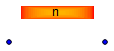

| Name | Description |
|---|---|
| WaterPipeExchanging_Nvols |

Extends from Interfaces.Water.PartialTwoPort_water (Partial component with two ports).
| Type | Name | Default | Description |
|---|---|---|---|
| Integer | n | 2 | number of lumps |
| Length | Ltube | 30 | tube length [m] |
| Length | Dtube | 0.05 | tube inner diameter [m] |
| Length | Dz | 0 | height diff (out-in) [m] |
| Real | Cftube | 1e-6 | tube friction coefficient |
| Temperature | Tstart | 273.15 + 25 | initial fluid temp [K] |
| Type | Name | Description |
|---|---|---|
| WaterFlange | water_flange2 | |
| WaterFlange | water_flange1 | |
| HeatPortVec | heatPort |